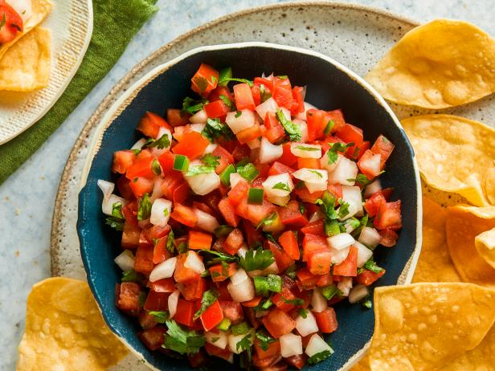

Classic Pico De gallo

Pico De Gallo
A classic pico de gallo made with simple ingredients,
the way it should be! Dip and scoop away with this flavorful
salsa fresca.
Ingredients
- 1 3/4 cups finely chopped roma tomatoes
- 2 tablespoons finely chopped onion
- 2 tablespoons chopped fresh cilantro
- 1 small fresh jalapeño pepper, seeded and finely chopped
- 1/2 teaspoon lime zest
- 1 tablespoon lime juice
- 1 clove garlic, minced
- 1/4 teaspoon salt
Steps
- 1. Stir together tomatoes, onion, cilantro, jalapeño ,
lime zest, lime juice, garlic, and salt in a bowl.
- 2. Chill,coverd, at least 1 hour or up to 4 hours.